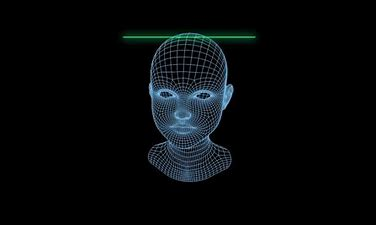

Pros of Artificial Intelligence page
Links:
Pros of Artificial Intelligence
There are many positives and benefits to the use of ARTIFICIAL INTELLIGENCE, including:
Permanent work:
This is through the possibility of machines continuously operating without feeling tired or bored, and their ability to produce constantly without regard to the time or circumstances surrounding the work.
Important applications for everyday life:
AI provides many applications that have become important to human daily life, and a smartphone and its various intelligent systems such as GPS are one of the most prominent examples of human need for different AI applications.
Use artificial intelligence to provide services:
Many major organizations have relied on ARTIFICIAL INTELLIGENCE systems to provide services to their customers rather than traditional employees.
Get rid of repetitive work:
AI systems can be used to do normal work that requires the same mechanism of action each time, and they can be used to do work that can be dangerous to human life.
Medical care:
There are many AI systems that provide medical care to humans, through surgical simulators, or those applications that help detect neurological disorders or those that allow the patient to know the side effects of medications, and it is necessary to mention radiosurgery applications that helped to remove tumors without causing any harm to the surrounding healthy tissues.
The ability to process a huge amount of data:
AI systems can handle, store and process a huge amount of data.
Accuracy and reduced margin of error:
Human use of AI systems reduces the proportion of error that may occur during tasks, apart from the great accuracy in performing these tasks.

refrance
https://en.wikipedia.org/wiki/Artificial_intelligence